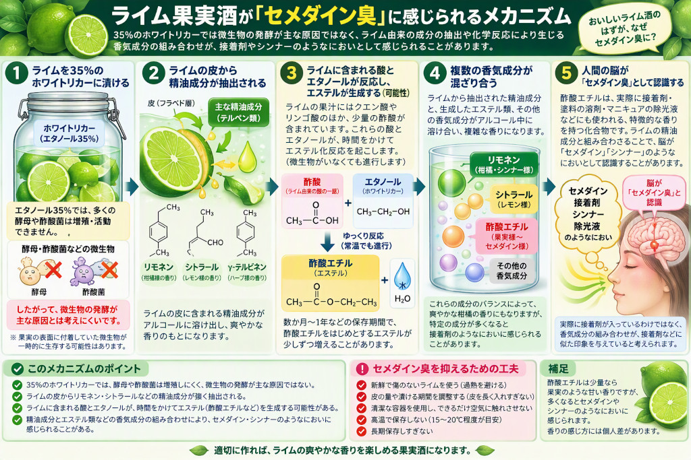

果実酒の科学
ライム果実酒が「セメダイン臭」に感じられる科学的理由
35度のホワイトリカーにライムを漬けたのに、接着剤やシンナーを思わせる香りがする。これは単純に「酢酸菌が増えた」とは説明しにくい現象です。ライム果皮から抽出された精油成分、保存中の香気変化、微量のエステル類などを分けて考えると、現象をより正確に理解できます。

先に結論
- 35度のホワイトリカーでは、酢酸菌や酵母の増殖は強く抑えられるため、漬け込み後に酢酸菌が活発に働いたという説明は主因としては考えにくいです。
- ライム果皮の香気成分はアルコールへ抽出されます。特にリモネンなどのテルペン系炭化水素は、量や組成、保存状態によって油臭い印象を与える可能性があります。
- 酢酸エチルは接着剤・除光液を連想させる代表的な香気候補ですが、実際にライム酒中で増えたかどうかは、においだけでは確定できません。
- 現実には一つの物質ではなく、精油、アルコール、アルデヒド、エステルなどの複合香を嗅覚が「セメダイン臭」とまとめて認識している可能性があります。
1. 35度では酢酸菌が主因とは考えにくい
最初に修正すべき点は、「酢酸菌がホワイトリカーのエタノールを酢酸に変え、その酢酸から酢酸エチルができた」と単純化する説明です。
35度はエタノール35％（容量比）です。この環境では一般的な微生物の増殖や代謝は大きく抑えられます。そのため、正常に35度のホワイトリカーへ漬け、全体が十分に浸かっている状態なら、漬け込み液の中で酢酸菌が活発に増殖し続けたとする筋書きは妥当性が低くなります。
ただし例外：仕込み直後に果汁や砂糖で局所的に薄まった部分、液面から出た果実表面、容器内壁などでは、液全体と条件が異なる可能性があります。カビ、膜、泡、強い酸臭、濁りなどがある場合は、単なる香気変化と決めつけないでください。
2. ライム果皮の精油成分がアルコールへ抽出される
柑橘の香りは果汁だけでなく、外果皮の油胞に多く存在します。ホワイトリカーは水とエタノールの混合溶媒なので、水に溶けやすい成分だけでなく、果皮の疎水性香気成分も取り込みます。
果皮から移りやすい香りの例
- リモネン：柑橘精油を代表するテルペン系炭化水素。
- シトラール：レモン様の印象に寄与するアルデヒド類の総称。
- γ-テルピネンなど：柑橘精油に含まれるテルペン類。
- リナロールなどの含酸素化合物：少量でも香りの特徴に影響しやすい成分群。
柑橘果皮を35％ホワイトリカーに浸漬した研究例があり、果皮由来の精油成分がアルコール側へ移ることが示されています。一方、リモネンなどのテルペン系炭化水素には油臭さがあり、経時変化も課題になると報告されています。
3. 酢酸エチルは候補だが、においだけでは断定できない
酢酸エチルは、少量では果実様に感じられる一方、強くなると接着剤、除光液、シンナーを連想させます。そのため「セメダイン臭」という表現から最初に疑われる成分です。
CH3COOH ＋ C2H5OH ⇄ CH3COOC2H5 ＋ H2O
ただし、ここで重要なのは、ライムの主酸はクエン酸であり、クエン酸から直接「酢酸エチル」ができるわけではないことです。酢酸エチルが新たに生成するには酢酸の供給源が必要です。また、水を多く含む常温の果実酒で、触媒を使う工業的な合成と同じ勢いで反応が進むとも限りません。
したがって、酢酸エチル説は有力な候補の一つですが、次の可能性を区別する必要があります。
- 果実にもともと含まれていた、または仕込み前の傷みで生じていた。
- 保存中に微量成分の反応で増減した。
- 酢酸エチルではなく、果皮精油やその変化物との複合香を似たにおいとして感じた。
4. 複数の香りを脳が「溶剤臭」と捉える
人が感じる「味」には、舌の味覚だけでなく、口から鼻へ抜ける香りも大きく関係します。このため、飲んだときの「セメダイン味」は、実際には揮発性成分を鼻で感じた結果であることが多いと考えられます。
ライム酒には、次の成分群が同時に存在します。
- ホワイトリカー由来のエタノール
- 果皮由来のテルペン類
- 果実由来のアルデヒドやアルコール類
- もともと存在する、または保存中に変化したエステル類
個々の成分は柑橘様、青葉様、果実様、油様などの香りでも、比率が変わると全体が「接着剤」「樹脂」「シンナー」のように知覚されることがあります。したがって、原因を単一物質へ決めつけず、香気バランスの変化として見るのが適切です。
5. 原因を切り分ける観察ポイント
漬けて早い時期から発生
- 果皮精油の過剰抽出
- 果実の傷みや過熟
- 果実にもともと含まれる揮発成分
数か月後に強くなった
- 精油成分の酸化・変化
- 香気成分同士の比率変化
- エステルやアルデヒド類の増減
飲用を避けた方がよい兆候
- 液面にカビや膜がある
- 容器が膨らむ、開栓時に異常なガスが出る
- 腐敗臭、強い酢臭、下水様臭がある
- 原因不明の濁りや粘りが出た
香りだけで安全性を判定することはできません。異常がある場合は味見で確かめず、飲用を控えるのが安全です。
6. 次回の仕込みでできる対策
- 新鮮で傷のないライムを使う：過熟果や傷んだ部分は避けます。
- 洗浄後の水分を拭き取る：余分な水で初期のアルコール濃度を下げないようにします。
- 果皮の量を減らす：皮付き果実と皮を除いた果実で小分け試験をすると、果皮由来か比較できます。
- 長期間、皮を入れっぱなしにしない：香りと苦味を確認しながら、適切な段階で果実や果皮を取り出します。
- 光と高温を避ける：精油成分の経時変化を抑えるため、密栓して冷暗所で管理します。
- 仕込み条件を記録する：果実重量、皮の有無、酒量、砂糖量、開始日、取り出し日を記録すると再現性が上がります。
切り分けに便利な小分け試験
同じライムとホワイトリカーを使い、A「皮付き」、B「外皮を薄く除く」、C「果汁のみ」の3条件を少量で仕込みます。同じ温度・期間で比較すれば、外皮精油が溶剤様の印象にどの程度関係しているか判断しやすくなります。
参考資料
- 柑橘の香気成分を活かした蒸留酒の製造（日本醸造協会誌）
- 柑橘の香気成分を活かした蒸留酒の製造（愛媛県産業技術研究所）
- 酢酸エチル臭・酢エチ臭（灘酒研究会）
- 清酒のにおいとその由来について（酒類総合研究所）
本記事は香りの原因候補を整理した解説です。特定の仕込みの原因物質を確定するには、ガスクロマトグラフィーなどによる揮発成分分析が必要です。